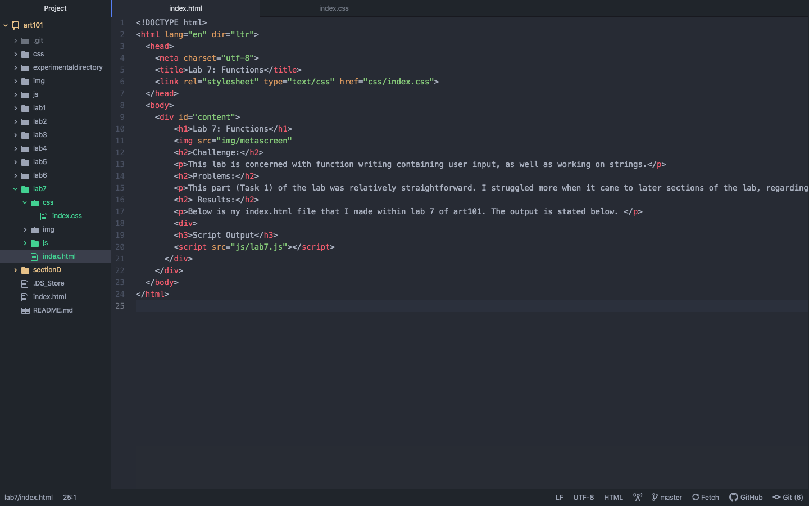

Lab 7: Functions
 A meta photo of this lab.Challenge:
This lab is concerned with function writing containing user input, as well as working on strings.
Problems:
This part (Task 1) of the lab was relatively straightforward. I struggled more when it came to later sections of the lab, regarding strings and functions. It's a bit difficult for me to remember all of the processes of sorting and organizing the functions. I was, at times, unable to recall formatting and input for functions. I had additional struggles when it came to linking the js to this index.html file in the lab, because I could not get the js to show up in the browser. I wasn't sure if I was doing something wrong through gitHub, or atom, or if the linking was incorrect, but it wasn't working at all.
Results:
This is my index.html file that I made within lab 7 of art101. The output is stated below.